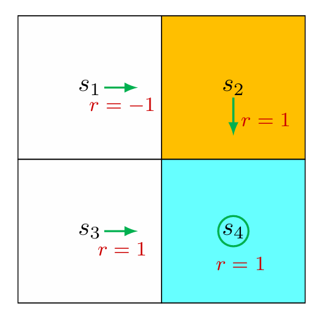
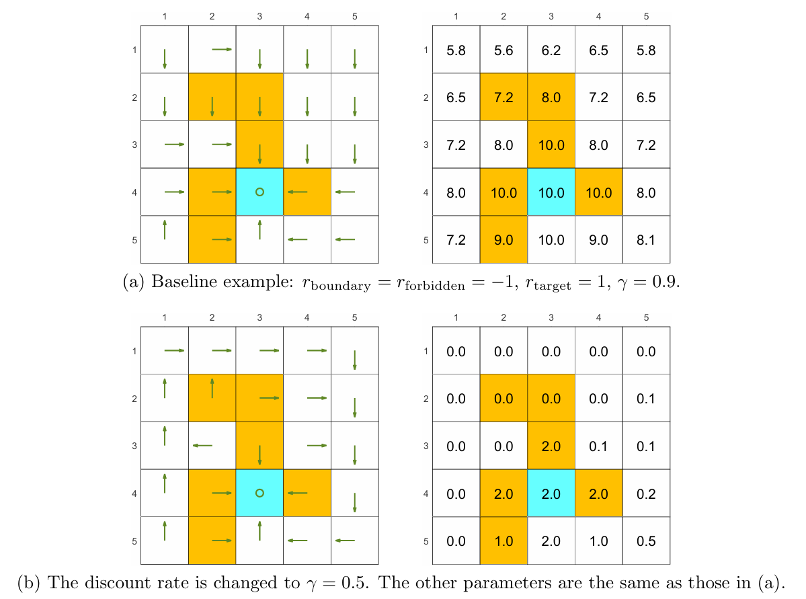
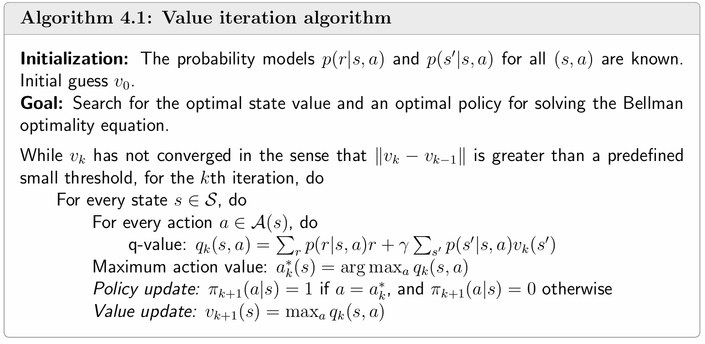
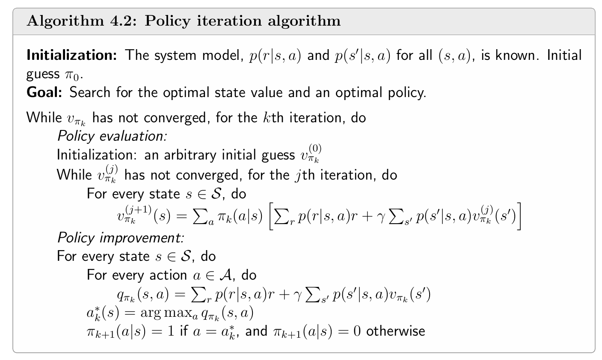
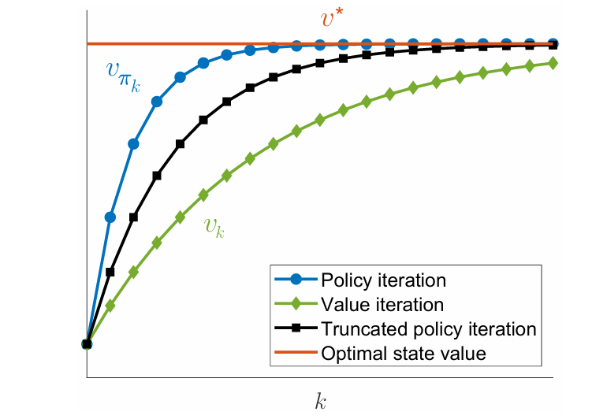
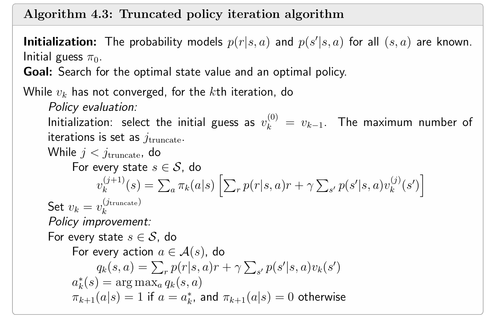

Policy 改进

设 γ = 0.9 \gamma=0.9 γ = 0.9
v π ( s 1 ) = 8 , v π ( s 2 ) = v π ( s 3 ) = v π ( s 4 ) = 10 v_{\pi}(s_1)=8,\\v_{\pi}(s_2)=v_{\pi}(s_3)=v_{\pi}(s_4)=10
v π ( s 1 ) = 8 , v π ( s 2 ) = v π ( s 3 ) = v π ( s 4 ) = 10
计算 s 1 s_1 s 1
q π ( s 1 , a 1 ) = − 1 + γ v π ( s 1 ) = 6.2 , q π ( s 1 , a 2 ) = − 1 + γ v π ( s 2 ) = 8 , q π ( s 1 , a 3 ) = 0 + γ v π ( s 3 ) = 9 , q π ( s 1 , a 4 ) = − 1 + γ v π ( s 1 ) = 6.2 , q π ( s 1 , a 5 ) = 0 + γ v π ( s 1 ) = 7.2. \begin{array}{l} q _ {\pi} \left(s _ {1}, a _ {1}\right) = - 1 + \gamma v _ {\pi} \left(s _ {1}\right) = 6. 2, \\ q _ {\pi} \left(s _ {1}, a _ {2}\right) = - 1 + \gamma v _ {\pi} \left(s _ {2}\right) = 8, \\ q _ {\pi} \left(s _ {1}, a _ {3}\right) = 0 + \gamma v _ {\pi} \left(s _ {3}\right) = 9, \\ q _ {\pi} \left(s _ {1}, a _ {4}\right) = - 1 + \gamma v _ {\pi} \left(s _ {1}\right) = 6. 2, \\ q _ {\pi} \left(s _ {1}, a _ {5}\right) = 0 + \gamma v _ {\pi} \left(s _ {1}\right) = 7. 2. \\ \end{array}
q π ( s 1 , a 1 ) = − 1 + γ v π ( s 1 ) = 6.2 , q π ( s 1 , a 2 ) = − 1 + γ v π ( s 2 ) = 8 , q π ( s 1 , a 3 ) = 0 + γ v π ( s 3 ) = 9 , q π ( s 1 , a 4 ) = − 1 + γ v π ( s 1 ) = 6.2 , q π ( s 1 , a 5 ) = 0 + γ v π ( s 1 ) = 7.2.
发现在状态 s 1 s_1 s 1 a 3 a_3 a 3 ，因此可以将策略改进为在状态 s 1 s_1 s 1 a 3 a_3 a 3
optimal policy & optimal state values
若有两个策略 π 1 \pi_1 π 1 π 2 \pi_2 π 2 s ∈ S s\in\mathcal{S} s ∈ S v π 1 ( s ) ≥ v π 2 ( s ) v_{\pi_1}(s)\geq v_{\pi_2}(s) v π 1 ( s ) ≥ v π 2 ( s ) π 1 \pi_1 π 1 π 2 \pi_2 π 2
因此，一个策略 π ∗ \pi^* π ∗ optimal policy（最优策略）当对于 任意策略 π \pi π 任意状态 s ∈ S s\in\mathcal{S} s ∈ S v π ∗ ( s ) ≥ v π ( s ) v_{\pi^*}(s)\geq v_{\pi}(s) v π ∗ ( s ) ≥ v π ( s ) π ∗ \pi^* π ∗ optimal state values（最优状态价值） 。
optimal policy 的存在性 、唯一性 、确定性 和求解 正是 **Bellman optimality equation（BOE，贝尔曼最优公式）**需要解决的问题。
贝尔曼最优公式
**Bellman optimality equation（BOE，贝尔曼最优公式）**是分析 optimal policy 和 optimal state values 的一个工具。其 element-wise 形式为
v ( s ) = max π ( s ) ∈ Π ( s ) ∑ a ∈ A ( s ) π ( a ∣ s ) ⋅ ( ∑ r ∈ R ( s , a ) p ( r ∣ s , a ) r + γ ∑ s ′ ∈ S p ( s ′ ∣ s , a ) v ( s ′ ) ) = max π ( s ) ∈ Π ( s ) ∑ a ∈ A ( s ) π ( a ∣ s ) ⋅ q ( s , a ) \begin{align}
v(s) &=\max_{\pi(s)\in\Pi(s)}\sum_{a\in\mathcal{A}(s)}\pi(a|s)\cdot\left(\sum_{r\in\mathcal{R}(s,a)}p(r|s,a)r+\gamma\sum_{s'\in\mathcal{S}}p(s'|s,a)v(s')\right)\\
&=\max_{\pi(s)\in\Pi(s)}\sum_{a\in\mathcal{A}(s)}\pi(a|s)\cdot q(s,a)
\end{align}
v ( s ) = π ( s ) ∈ Π ( s ) max a ∈ A ( s ) ∑ π ( a ∣ s ) ⋅ r ∈ R ( s , a ) ∑ p ( r ∣ s , a ) r + γ s ′ ∈ S ∑ p ( s ′ ∣ s , a ) v ( s ′ ) = π ( s ) ∈ Π ( s ) max a ∈ A ( s ) ∑ π ( a ∣ s ) ⋅ q ( s , a )
其中 v ( s ) , v ( s ′ ) v(s),v(s') v ( s ) , v ( s ′ ) π ( s ) \pi(s) π ( s ) s s s Π ( s ) \Pi(s) Π ( s ) s s s
其 matrix-vector 形式为
v = max π ∈ Π ( r π + γ P π v ) v=\max_{\pi\in\Pi}(r_{\pi}+\gamma P_{\pi}v)
v = π ∈ Π max ( r π + γ P π v )
其中 v ∈ R ∣ S ∣ v\in\mathbb{R}^{|\mathcal{S}|} v ∈ R ∣ S ∣ max π \max_{\pi} max π r π ∈ R ∣ S ∣ r_{\pi}\in\mathbb{R}^{|S|} r π ∈ R ∣ S ∣ P π ∈ R ∣ S ∣ × ∣ S ∣ P_{\pi}\in\mathbb{R}^{|\mathcal{S}|\times|\mathcal{S}|} P π ∈ R ∣ S ∣ × ∣ S ∣ 当前环境与策略下 的状态转移概率矩阵。
等式的右边称为贝尔曼最优算子。
解的形式
先看解长什么样。注意到这里有两个未知量 v ( s ) v(s) v ( s ) π ( s ) \pi(s) π ( s ) 只要关注等式右边即可 。
考虑求解这样一个有两个未知量 x , y ∈ R x,y\in\mathbb{R} x , y ∈ R
x = max y ∈ R ( 2 x − 1 − y 2 ) x=\max_{y\in\mathbb{R}}(2x-1-y^2)
x = y ∈ R max ( 2 x − 1 − y 2 )
要想使得右边最大，需令 y = 0 y=0 y = 0 max y ∈ R ( 2 x − 1 − y 2 ) = 2 x − 1 \max_{y\in\mathbb{R}}(2x-1-y^2)=2x-1 max y ∈ R ( 2 x − 1 − y 2 ) = 2 x − 1 x = 2 x − 1 x=2x-1 x = 2 x − 1 x = 1 x=1 x = 1 x = 1 , y = 0 x=1,y=0 x = 1 , y = 0 π ∗ \pi^* π ∗
而对于等式右边项 ∑ a ∈ A ( s ) π ( a ∣ s ) ⋅ q ( s , a ) \sum_{a\in\mathcal{A}(s)}\pi(a|s)\cdot q(s,a) ∑ a ∈ A ( s ) π ( a ∣ s ) ⋅ q ( s , a ) q ( s , a ) q(s,a) q ( s , a ) max a ∈ A ( s ) q ( s , a ) \max_{a\in\mathcal{A}(s)}q(s,a) max a ∈ A ( s ) q ( s , a )
考虑下列式子的最大值
∑ i = 1 3 c i q i = c 1 q 1 + c 2 q 2 + c 3 q 3 \sum_{i=1}^{3}c_{i}q_{i}=c_1q_1+c_2q_2+c_3q_3
i = 1 ∑ 3 c i q i = c 1 q 1 + c 2 q 2 + c 3 q 3
其中 c 1 + c 2 + c 3 = 1 c_1+c_2+c_3=1 c 1 + c 2 + c 3 = 1 c 1 , c 2 , c 3 ≥ 0 c_1,c_2,c_3\geq 0 c 1 , c 2 , c 3 ≥ 0
不失一般性，假设 q 3 ≥ q 1 , q 2 q_3\geq q_1,q_2 q 3 ≥ q 1 , q 2 c 3 = 1 c_3=1 c 3 = 1 c 1 = c 2 = 0 c_1=c_2=0 c 1 = c 2 = 0 q 3 q_3 q 3
q 3 = ( c 1 + c 2 + c 3 ) q 3 = c 1 q 3 + c 2 q 3 + c 3 q 3 ≥ c 1 q 1 + c 2 q 2 + c 3 q 3 q_3=(c_1+c_2+c_3)q_3=c_1q_3+c_2q_3+c_3q_3\geq c_1q_1+c_2q_2+c_3q_3
q 3 = ( c 1 + c 2 + c 3 ) q 3 = c 1 q 3 + c 2 q 3 + c 3 q 3 ≥ c 1 q 1 + c 2 q 2 + c 3 q 3
因此 BOE 解出来的 optimal policy 是确定性 的，每一个 v ( s ) v(s) v ( s )
π ( a ∣ s ) = { 1 , a = a ∗ 0 , a ≠ a ∗ \pi(a|s)=\begin{cases}
1, & a=a^*\\
0, & a\neq a^*
\end{cases}
π ( a ∣ s ) = { 1 , 0 , a = a ∗ a = a ∗
其中 a ∗ = arg max a q ( s , a ) a^*=\arg\max_{a}q(s,a) a ∗ = arg max a q ( s , a ) 在最优策略下，每一个状态 s s s （事实上，这是后续会讲到的贪婪策略）。
解的存在性与唯一性证明
如何证明 BOE 是否存在解，解是否唯一？以及，如果存在解如何求？这需要引入一个理论——contraction mapping theorem（压缩映射理论） 。
压缩映射理论
考虑函数 f ( x ) f(x) f ( x ) x ∈ R d x\in\mathbb{R}^d x ∈ R d f : R d → R d f:\mathbb{R}^d\to\mathbb{R}^d f : R d → R d x ∗ x^* x ∗
f ( x ∗ ) = x ∗ f(x^*)=x^*
f ( x ∗ ) = x ∗
则 x ∗ x^* x ∗ 不动点 ，即 f f f x ∗ x^* x ∗
若存在实数 γ ∈ ( 0 , 1 ) \gamma\in(0,1) γ ∈ ( 0 , 1 ) f f f x 1 , x 2 ∈ R d x_1,x_2\in\mathbb{R}^d x 1 , x 2 ∈ R d
∥ f ( x 1 ) − f ( x 2 ) ∥ ≤ γ ∥ x 1 − x 2 ∥ \left\|f(x_1)-f(x_2)\right\|\le\gamma\left\|x_1-x_2\right\|
∥ f ( x 1 ) − f ( x 2 ) ∥ ≤ γ ∥ x 1 − x 2 ∥
则函数 f f f contraction mapping（压缩映射） 。这里 ∥ ⋅ ∥ \|\cdot\| ∥ ⋅ ∥
例如函数 f ( x ) = 0.5 sin x , x ∈ R f(x)=0.5\sin x,x\in\mathbb{R} f ( x ) = 0.5 sin x , x ∈ R
∣ f ( x 1 ) − f ( x 2 ) x 1 − x 2 ∣ = ∣ 0.5 sin x 1 − 0.5 sin x 2 x 1 − x 2 ∣ = ∣ cos x 1 + x 2 2 sin x 1 − x 2 2 x 1 − x 2 ∣ ≤ ∣ 0.5 cos x 1 + x 2 2 ∣ ≤ 0.5 \begin{align}
\left|\frac{f(x_1)-f(x_2)}{x_1-x_2}\right|=\left|\frac{0.5\sin x_1-0.5\sin x_2}{x_1-x_2}\right|&=\left|\frac{\cos\frac{x_1+x_2}{2}\sin\frac{x_1-x_2}{2}}{x_1-x_2}\right|\le\left|0.5\cos\frac{x_1+x_2}{2}\right|\le0.5
\end{align}
x 1 − x 2 f ( x 1 ) − f ( x 2 ) = x 1 − x 2 0.5 sin x 1 − 0.5 sin x 2 = x 1 − x 2 cos 2 x 1 + x 2 sin 2 x 1 − x 2 ≤ 0.5 cos 2 x 1 + x 2 ≤ 0.5
即 ∣ f ( x 1 ) − f ( x 2 ) ∣ ≤ 0.5 ∣ x 1 − x 2 ∣ \left|f(x_1)-f(x_2)\right|\le0.5\left|x_1-x_2\right| ∣ f ( x 1 ) − f ( x 2 ) ∣ ≤ 0.5 ∣ x 1 − x 2 ∣ f ( x ) f(x) f ( x ) x = 0 x=0 x = 0
压缩映射理论中指出，对于任意满足 x = f ( x ) x=f(x) x = f ( x ) x x x f ( x ) f(x) f ( x ) f f f
存在性 ：存在一个不动点 x ∗ x^* x ∗ f ( x ∗ ) = x ∗ f(x^*)=x^* f ( x ∗ ) = x ∗ 唯一性 ：不动点 x ∗ x^* x ∗ 求解算法 ：使用迭代 的数值求解 x k + 1 = f ( x k ) x_{k+1}=f(x_k) x k + 1 = f ( x k ) x 0 x_0 x 0 k → ∞ k\to\infty k → ∞ x k → x ∗ x_{k}\to x^* x k → x ∗
BOE 满足压缩映射
记贝尔曼最优公式的等式右边为 f ( v ) f(v) f ( v )
f ( v ) = max π ( r π + γ P π v ) f(v)=\max_{\pi}(r_{\pi}+\gamma P_{\pi}v)
f ( v ) = π max ( r π + γ P π v )
则 f ( v ) f(v) f ( v ) v 1 , v 2 ∈ R ∣ S ∣ v_{1},v_{2}\in R^{|\mathcal{S}|} v 1 , v 2 ∈ R ∣ S ∣
∥ f ( v 1 ) − f ( v 2 ) ∥ ∞ ≤ γ ∥ v 1 − v 2 ∥ ∞ \left\|f(v_{1})-f(v_{2})\right\|_{\infty}\le\gamma\left\|v_{1}-v_{2}\right\|_{\infty}
∥ f ( v 1 ) − f ( v 2 ) ∥ ∞ ≤ γ ∥ v 1 − v 2 ∥ ∞
其中 γ ∈ ( 0 , 1 ) \gamma\in(0,1) γ ∈ ( 0 , 1 ) ∥ ⋅ ∥ ∞ \|\cdot\|_{\infty} ∥ ⋅ ∥ ∞ ∥ X ∥ ∞ = max i ∣ x i ∣ \|X\|_{\infty}=\max_{i}|x_i| ∥ X ∥ ∞ = max i ∣ x i ∣
注意，上述的性质在无穷范数 下成立，但在 l 2 l_2 l 2
因此，贝尔曼最优方程 v = f ( v ) v=f(v) v = f ( v ) ：
v k + 1 ← max π ( r π + γ P π v k ) v_{k+1}\gets \max_{\pi}(r_{\pi}+\gamma P_{\pi}v_{k})
v k + 1 ← π max ( r π + γ P π v k )
每一轮迭代需要根据 v k v_{k} v k π \pi π s s s v k ( s ′ ) v_{k}(s') v k ( s ′ ) s s s q k ( s , a ) q_{k}(s,a) q k ( s , a ) q k ( s , a ) q_{k}(s,a) q k ( s , a ) arg max a q k ( s , a ) \arg\max_{a}q_{k}(s,a) arg max a q k ( s , a ) v k + 1 v_{k+1} v k + 1 i i i s i s_{i} s i q k ( s , a ) q_{k}(s,a) q k ( s , a ) k → ∞ k\to\infty k → ∞ v k → v ∗ v_{k}\to v^* v k → v ∗
证明 BOE 满足压缩映射 ：
考虑两个向量 v 1 , v 2 ∈ R ∣ S ∣ v_{1},v_{2}\in\mathbb{R}^{|\mathcal{S}|} v 1 , v 2 ∈ R ∣ S ∣ π 1 ∗ = arg max π ( r π + γ P π v 1 ) \pi_{1}^*=\arg\max_{\pi}(r_{\pi}+\gamma P_{\pi}v_{1}) π 1 ∗ = arg max π ( r π + γ P π v 1 ) π 2 ∗ = arg max π ( r π + γ P π v 2 ) \pi_{2}^*=\arg\max_{\pi}(r_{\pi}+\gamma P_{\pi}v_{2}) π 2 ∗ = arg max π ( r π + γ P π v 2 ) π 1 ∗ \pi_{1}^* π 1 ∗ π 2 ∗ \pi_{2}^* π 2 ∗ v 1 v_{1} v 1 v 2 v_{2} v 2
f ( v 1 ) = max π ( r π + γ P π v 1 ) = r π 1 ∗ + γ P π 1 ∗ v 1 ≥ r π 2 ∗ + γ P π 2 ∗ v 1 f ( v 2 ) = max π ( r π + γ P π v 2 ) = r π 2 ∗ + γ P π 2 ∗ v 2 ≥ r π 1 ∗ + γ P π 1 ∗ v 2 f(v_{1})=\max_{\pi}(r_{\pi}+\gamma P_{\pi}v_{1})=r_{\pi_{1}^*}+\gamma P_{\pi_{1}^*}v_{1}\ge r_{\pi_{2}^*}+\gamma P_{\pi_{2}^*}v_{1}\\
f(v_{2})=\max_{\pi}(r_{\pi}+\gamma P_{\pi}v_{2})=r_{\pi_{2}^*}+\gamma P_{\pi_{2}^*}v_{2}\ge r_{\pi_{1}^*}+\gamma P_{\pi_{1}^*}v_{2}
f ( v 1 ) = π max ( r π + γ P π v 1 ) = r π 1 ∗ + γ P π 1 ∗ v 1 ≥ r π 2 ∗ + γ P π 2 ∗ v 1 f ( v 2 ) = π max ( r π + γ P π v 2 ) = r π 2 ∗ + γ P π 2 ∗ v 2 ≥ r π 1 ∗ + γ P π 1 ∗ v 2
其中 ≥ \ge ≥
f ( v 1 ) − f ( v 2 ) = r π 1 ∗ + γ P π 1 ∗ v 1 − ( r π 2 ∗ + γ P π 2 ∗ v 2 ) ≤ r π 1 ∗ + γ P π 1 ∗ v 1 − ( r π 1 ∗ + γ P π 1 ∗ v 2 ) = γ P π 1 ∗ ( v 1 − v 2 ) \begin{align}
f(v_{1})-f(v_{2})&=r_{\pi_{1}^*}+\gamma P_{\pi_{1}^*}v_{1}-(r_{\pi_{2}^*}+\gamma P_{\pi_{2}^*}v_{2})\\
&\le r_{\pi_{1}^*}+\gamma P_{\pi_{1}^*}v_{1}-(r_{\pi_{1}^*}+\gamma P_{\pi_{1}^*}v_{2})\\
&=\gamma P_{\pi_{1}^*}(v_{1}-v_{2})
\end{align}
f ( v 1 ) − f ( v 2 ) = r π 1 ∗ + γ P π 1 ∗ v 1 − ( r π 2 ∗ + γ P π 2 ∗ v 2 ) ≤ r π 1 ∗ + γ P π 1 ∗ v 1 − ( r π 1 ∗ + γ P π 1 ∗ v 2 ) = γ P π 1 ∗ ( v 1 − v 2 )
同理可得 f ( v 2 ) − f ( v 1 ) ≤ γ P π 2 ∗ ( v 2 − v 1 ) f(v_{2})-f(v_{1})\le\gamma P_{\pi_{2}^*}(v_{2}-v_{1}) f ( v 2 ) − f ( v 1 ) ≤ γ P π 2 ∗ ( v 2 − v 1 )
γ P π 2 ∗ ( v 1 − v 2 ) ≤ f ( v 1 ) − f ( v 2 ) ≤ γ P π 1 ∗ ( v 1 − v 2 ) \gamma P_{\pi_{2}^*}(v_{1}-v_{2})\le f(v_{1})-f(v_{2})\le\gamma P_{\pi_{1}^*}(v_{1}-v_{2})
γ P π 2 ∗ ( v 1 − v 2 ) ≤ f ( v 1 ) − f ( v 2 ) ≤ γ P π 1 ∗ ( v 1 − v 2 )
记
z = max { ∣ γ P π 2 ∗ ( v 1 − v 2 ) ∣ , ∣ γ P π 1 ∗ ( v 1 − v 2 ) ∣ } ∈ R ∣ S ∣ z=\max\left\{\left|\gamma P_{\pi_{2}^*}(v_{1}-v_{2})\right|,\left|\gamma P_{\pi_{1}^*}(v_{1}-v_{2})\right|\right\}\in\mathbb{R}^{|\mathcal{S}|}
z = max { γ P π 2 ∗ ( v 1 − v 2 ) , γ P π 1 ∗ ( v 1 − v 2 ) } ∈ R ∣ S ∣
由定义知 z ≥ 0 z\ge 0 z ≥ 0 max ( ⋅ ) \max(\cdot) max ( ⋅ ) ∣ ⋅ ∣ |\cdot| ∣ ⋅ ∣ ≥ \ge ≥
因此有
− z ≤ γ P π 2 ∗ ( v 1 − v 2 ) ≤ f ( v 1 ) − f ( v 2 ) ≤ γ P π 1 ∗ ( v 1 − v 2 ) ≤ z -z\le\gamma P_{\pi_{2}^*}(v_{1}-v_{2})\le f(v_{1})-f(v_{2})\le\gamma P_{\pi_{1}^*}(v_{1}-v_{2})\le z
− z ≤ γ P π 2 ∗ ( v 1 − v 2 ) ≤ f ( v 1 ) − f ( v 2 ) ≤ γ P π 1 ∗ ( v 1 − v 2 ) ≤ z
即
∣ f ( v 1 ) − f ( v 2 ) ∣ ≤ z \left|f(v_{1})-f(v_{2})\right|\le z
∣ f ( v 1 ) − f ( v 2 ) ∣ ≤ z
其中 ≤ \le ≤
∥ f ( v 1 ) − f ( v 2 ) ∥ ∞ ≤ ∥ z ∥ ∞ ( ∗ ) \left\|f(v_1)-f(v_2)\right\|_{\infty}\le\|z\|_{\infty}\tag{$\ast$}
∥ f ( v 1 ) − f ( v 2 ) ∥ ∞ ≤ ∥ z ∥ ∞ ( ∗ )
其中 ∥ ⋅ ∥ ∞ \|\cdot\|_{\infty} ∥ ⋅ ∥ ∞ ∣ f ( v 1 ) − f ( v 2 ) ∣ |f(v_{1})-f(v_{2})| ∣ f ( v 1 ) − f ( v 2 ) ∣ ≤ \le ≤ ∣ z ∣ |z| ∣ z ∣
另一方面，记 z i z_{i} z i z z z i i i p i T p_{i}^T p i T q i T q_i^T q i T P π 1 ∗ P_{\pi_{1}^*} P π 1 ∗ P π 2 ∗ P_{\pi_{2}^*} P π 2 ∗ i i i z z z
0 ≤ z i = max { ∣ γ p i T ( v 1 − v 2 ) ∣ , ∣ γ q i T ( v 1 − v 2 ) ∣ } ∈ R 0\le z_{i}=\max\left\{\left|\gamma p_{i}^T(v_{1}-v_{2})\right|,\left|\gamma q_{i}^T(v_{1}-v_{2})\right|\right\}\in\mathbb{R}
0 ≤ z i = max { γ p i T ( v 1 − v 2 ) , γ q i T ( v 1 − v 2 ) } ∈ R
由于 p i p_{i} p i
∣ p i T ( v 1 − v 2 ) ∣ ≤ p i T ∣ v 1 − v 2 ∣ ≤ ∥ v 1 − v 2 ∥ ∞ \left|p_{i}^T(v_{1}-v_2)\right|\le p_{i}^T\left|v_{1}-v_2\right|\le\left\|v_{1}-v_{2}\right\|_{\infty}
p i T ( v 1 − v 2 ) ≤ p i T ∣ v 1 − v 2 ∣ ≤ ∥ v 1 − v 2 ∥ ∞
上式第一个不等号为绝对值不等式，第二个等号可以理解为 p i p_{i} p i
同理，有 ∣ q i T ( v 1 − v 2 ) ∣ ≤ ∥ v 1 − v 2 ∥ ∞ \left|q_{i}^T(v_{1}-v_2)\right|\le\left\|v_{1}-v_{2}\right\|_{\infty} q i T ( v 1 − v 2 ) ≤ ∥ v 1 − v 2 ∥ ∞
0 ≤ z i ≤ γ ∥ v 1 − v 2 ∥ ∞ 0\le z_{i}\le\gamma\left\|v_{1}-v_{2}\right\|_{\infty}
0 ≤ z i ≤ γ ∥ v 1 − v 2 ∥ ∞
进一步地，有
∥ z ∥ ∞ = max i ∣ z i ∣ ≤ γ ∥ v 1 − v 2 ∥ ∞ \|z\|_{\infty}=\max_{i}|z_{i}|\le\gamma\left\|v_{1}-v_{2}\right\|_{\infty}
∥ z ∥ ∞ = i max ∣ z i ∣ ≤ γ ∥ v 1 − v 2 ∥ ∞
带入 ( ∗ ) (*) ( ∗ )
∥ f ( v 1 ) − f ( v 2 ) ∥ ∞ ≤ γ ∥ v 1 − v 2 ∥ ∞ \left\|f(v_{1})-f(v_{2})\right\|_{\infty}\le\gamma\left\|v_{1}-v_{2}\right\|_{\infty}
∥ f ( v 1 ) − f ( v 2 ) ∥ ∞ ≤ γ ∥ v 1 − v 2 ∥ ∞
这体现了 f ( v ) f(v) f ( v )
解的最优性证明
到目前为止，尽管已经证明了贝尔曼最优方程解的存在性和唯一性，但是并没有说明其解 π ∗ \pi^* π ∗ v ∗ v^* v ∗ π ∗ \pi^* π ∗ v ∗ v^* v ∗ π \pi π
v ∗ = v π ∗ ≥ v π v^*=v_{\pi^*}\ge v_{\pi}
v ∗ = v π ∗ ≥ v π
其中 ≥ \ge ≥
解的最优性证明 ：
由贝尔曼公式，对于任意策略 π \pi π
v π = r π + γ P π v π v_{\pi}=r_{\pi}+\gamma P_{\pi}v_{\pi}
v π = r π + γ P π v π
由于
v ∗ = max π ( r π + γ P π v ∗ ) = r π ∗ + γ P π ∗ v ∗ ≥ r π + γ P π v ∗ v^*=\max_{\pi}(r_{\pi}+\gamma P_{\pi}v^*)=r_{\pi^*}+\gamma P_{\pi^*}v^*\ge r_{\pi}+\gamma P_{\pi}v^*
v ∗ = π max ( r π + γ P π v ∗ ) = r π ∗ + γ P π ∗ v ∗ ≥ r π + γ P π v ∗
其中 ≥ \ge ≥
v ∗ − v π ≥ r π + γ P π v ∗ − ( r π + γ P π v π ) = γ P π ( v ∗ − v π ) v^*-v_{\pi}\ge r_{\pi}+\gamma P_{\pi}v^*-(r_{\pi}+\gamma P_{\pi}v_{\pi})=\gamma P_{\pi}(v^*-v_{\pi})
v ∗ − v π ≥ r π + γ P π v ∗ − ( r π + γ P π v π ) = γ P π ( v ∗ − v π )
于是可以得到
v ∗ − v π ≥ γ P π ( v ∗ − v π ) ≥ γ 2 P π 2 ( v ∗ − v π ) ≥ ⋯ ≥ γ n P π n ( v ∗ − v π ) v^*-v_{\pi}\ge \gamma P_{\pi}(v^*-v_{\pi})\ge \gamma^2 P_{\pi}^2(v^*-v_{\pi}) \ge\cdots\ge \gamma^n P_{\pi}^n(v^*-v_{\pi})
v ∗ − v π ≥ γ P π ( v ∗ − v π ) ≥ γ 2 P π 2 ( v ∗ − v π ) ≥ ⋯ ≥ γ n P π n ( v ∗ − v π )
这里的 P π n P_{\pi}^n P π n 1 1 1 π \pi π n n n γ n \gamma^n γ n n → ∞ n\to\infty n → ∞ 0 0 0 n → ∞ n\to\infty n → ∞
v ∗ − v π ≥ lim n → ∞ γ n P π n ( v ∗ − v π ) = 0 v^*-v_{\pi}\ge\lim_{n\to\infty}\gamma^n P_{\pi}^n(v^*-v_{\pi})=0
v ∗ − v π ≥ n → ∞ lim γ n P π n ( v ∗ − v π ) = 0
即 v ∗ ≥ v π v^*\ge v_{\pi} v ∗ ≥ v π π \pi π
综上，从贝尔曼最优方程解的存在性、唯一性以及其代表着最优策略和最优状态价值可见，它是分析 optimal policy 和 optimal state values 的一个很好的工具 。
影响最优策略的因素
结合 element-wise 的 BOE
v ( s ) = max π ( s ) ∈ Π ( s ) ∑ a ∈ A ( s ) π ( a ∣ s ) ⋅ ( ∑ r ∈ R ( s , a ) p ( r ∣ s , a ) r + γ ∑ s ′ ∈ S p ( s ′ ∣ s , a ) v ( s ′ ) ) v(s)=\max_{\pi(s)\in\Pi(s)}\sum_{a\in\mathcal{A}(s)}\pi(a|s)\cdot\left(\sum_{r\in\mathcal{R}(s,a)}p(r|s,a)r+\gamma\sum_{s'\in\mathcal{S}}p(s'|s,a)v(s')\right)
v ( s ) = π ( s ) ∈ Π ( s ) max a ∈ A ( s ) ∑ π ( a ∣ s ) ⋅ r ∈ R ( s , a ) ∑ p ( r ∣ s , a ) r + γ s ′ ∈ S ∑ p ( s ′ ∣ s , a ) v ( s ′ )
到这里可以发现 element-wise 形式的公式便于分析，而 matrix-vector 形式便于求解。
可以发现影响方程解的因素有
即时奖励 r r r
折扣因子 γ \gamma γ
环境模型 p ( r ∣ s , a ) p(r\mid s,a) p ( r ∣ s , a ) p ( s ′ ∣ s , a ) p(s'\mid s,a) p ( s ′ ∣ s , a )
环境往往不可改变，因此这里主要讨论能够改变的因素：即时奖励 r r r γ \gamma γ
折扣因子

上图均为特定环境和设置下的最优策略。由上图（a）状态 ( 4 , 1 ) (4,1) ( 4 , 1 ) γ = 0.9 \gamma=0.9 γ = 0.9
此外，还可以见得靠近终点 的状态会有更高的价值，因为在折扣因子的作用下，离终点越远的状态获得的正奖励（到达终点）越小，而越近的状态获得的正奖励越大。
即时奖励
显然，如果对某些状态下的某些行为给予更多的正奖励或者惩罚，那么最优策略会相应地做出偏好或避免的趋势。但是，最优策略在某些情况下是会保持不变 的：对即时奖励 r r r affine tranformations（仿射变换） ，也就是对所有的即时奖励都扩大相同倍数或改变相同的量。
一个变换 T : R n → R m T:\mathbb{R}^n\to\mathbb{R}^m T : R n → R m Affine Transformation（仿射变换） ，如果它可以表示为
T ( x ) = A x + b T(\mathbf{x})=A\mathbf{x}+\mathbf{b}
T ( x ) = A x + b
其中 A ∈ R m × n A\in\mathbb{R}^{m\times n} A ∈ R m × n b ∈ R m b\in\mathbb{R}^m b ∈ R m b = 0 \mathbf{b}=\mathbf{0} b = 0 T T T 线性变换 。
仿射变换可以看作线性变换 + 平移 。
考虑一个 MDP，其最优状态价值为 v ∗ ∈ R ∣ S ∣ v^*\in\mathbb{R}^{|\mathcal{S}|} v ∗ ∈ R ∣ S ∣ v ∗ = max π ( r π + γ P π v ∗ ) v^*=\max_{\pi}(r_{\pi}+\gamma P_{\pi}v^*) v ∗ = max π ( r π + γ P π v ∗ ) r ∈ R r\in\mathcal{R} r ∈ R α r + β \alpha r+\beta α r + β α , β ∈ R \alpha,\beta\in\mathbb{R} α , β ∈ R α > 0 \alpha>0 α > 0 v ′ v' v ′ v ∗ v^* v ∗
v ′ = α v ∗ + β 1 − γ 1 v'=\alpha v^*+\frac{\beta}{1-\gamma}\mathbf{1}
v ′ = α v ∗ + 1 − γ β 1
其中 γ ∈ ( 0 , 1 ) \gamma\in(0,1) γ ∈ ( 0 , 1 ) 1 = [ 1 , … , 1 ] T ∈ R ∣ S ∣ \mathbf{1}=\left[1,\dots,1\right]^T\in\mathbb{R}^{|\mathcal{S}|} 1 = [ 1 , … , 1 ] T ∈ R ∣ S ∣ α > 0 \alpha>0 α > 0
求解 BOE
前文介绍了求解贝尔曼公式的算法，是通过迭代的数值方法求解。这里介绍三种具体实现，分别是 value iteration（值迭代） ，**policy iteraion（策略迭代）**以及介于二者之间的 truncated iteration（截断迭代） 。
这三种方法称为动态规划方法，都是 **model-based（基于模型）**的，与 model-free 不同。
value iteration
value iteration 借助 BOE 的压缩性质求解，其迭代公式为
v k + 1 = max π ∈ Π ( r π + γ P π v k ) , k = 0 , 1 , 2 , … v_{k+1}=\max_{\pi\in\Pi}(r_{\pi}+\gamma P_{\pi}v_{k}),\quad k=0,1,2,\dots
v k + 1 = π ∈ Π max ( r π + γ P π v k ) , k = 0 , 1 , 2 , …
根据压缩映射定理，当 k → ∞ k\to\infty k → ∞ v k v_{k} v k π k \pi_k π k
迭代的过程具体而言，在一开始，会初始化一个 v 0 v_0 v 0 policy update 和 value update 。
policy update
第一步是 policy update，目的是找到一个策略满足
π k + 1 = arg max π ( r π + γ P π v k ) \pi_{k+1}=\arg\max_{\pi}(r_{\pi}+\gamma P_{\pi}v_k)
π k + 1 = arg π max ( r π + γ P π v k )
其中 v k v_k v k
目标方程的 element-wise 形式为
π k + 1 ( s ) = arg max π ∑ a π ( a ∣ s ) ( ∑ r p ( r ∣ s , a ) r + γ ∑ s ′ p ( s ′ ∣ s , a ) v k ( s ′ ) ) ⏟ q k ( s , a ) , s ∈ S . \pi_ {k + 1} (s) = \arg \max _ {\pi} \sum_ {a} \pi (a | s) \underbrace {\left(\sum_ {r} p (r | s , a) r + \gamma \sum_ {s ^ {\prime}} p \left(s ^ {\prime} | s , a\right) v _ {k} \left(s ^ {\prime}\right)\right)} _ {q _ {k} (s , a)}, \quad s \in \mathcal {S}.
π k + 1 ( s ) = arg π max a ∑ π ( a ∣ s ) q k ( s , a ) ( r ∑ p ( r ∣ s , a ) r + γ s ′ ∑ p ( s ′ ∣ s , a ) v k ( s ′ ) ) , s ∈ S .
根据之前“解的形式”部分可以知道，这里找的策略是在每个状态 s s s q k ( s , a ) q_{k}(s,a) q k ( s , a )
π k + 1 ( a ∣ s ) = { 1 , a = a k ∗ ( s ) , 0 , a ≠ a k ∗ ( s ) , \pi_{k+1} ( a | s )=\left\{\begin{array} {c c} {1 ,} & {a=a_{k}^{*} ( s ) ,} \\ {0 ,} & {a \neq a_{k}^{*} ( s ) ,} \\ \end{array} \right.
π k + 1 ( a ∣ s ) = { 1 , 0 , a = a k ∗ ( s ) , a = a k ∗ ( s ) ,
其中 a k ∗ ( s ) = arg max a q k ( s , a ) a^*_k(s)=\arg\max_{a}q_k(s,a) a k ∗ ( s ) = arg max a q k ( s , a ) q k ( s , a ) q_{k}(s,a) q k ( s , a ) v k v_k v k q k ( s , a ) q_{k}(s,a) q k ( s , a )
需要注意的是，每次迭代更新得到的 π k + 1 \pi_{k+1} π k + 1 π k \pi_k π k
value update
第二步是 value update，用于根据找到的新策略 π k + 1 \pi_{k+1} π k + 1 v k + 1 v_{k+1} v k + 1
v k + 1 = r π k + 1 + γ P π k + 1 v k v_{k+1}=r_{\pi_{k+1}}+\gamma P_{\pi_{k+1}}v_k
v k + 1 = r π k + 1 + γ P π k + 1 v k
得到的 v k + 1 v_{k+1} v k + 1
目标方程的 element-wise 形式为
v k + 1 ( s ) = ∑ a π k + 1 ( a ∣ s ) ( ∑ r p ( r ∣ s , a ) r + γ ∑ s ′ p ( s ′ ∣ s , a ) v k ( s ′ ) ) ⏟ q k ( s , a ) , s ∈ S . v _ {k + 1} (s) = \sum_ {a} \pi_ {k + 1} (a | s) \underbrace {\left(\sum_ {r} p (r | s , a) r + \gamma \sum_ {s ^ {\prime}} p \left(s ^ {\prime} | s , a\right) v _ {k} \left(s ^ {\prime}\right)\right)} _ {q _ {k} (s , a)}, \quad s \in \mathcal {S}.
v k + 1 ( s ) = a ∑ π k + 1 ( a ∣ s ) q k ( s , a ) ( r ∑ p ( r ∣ s , a ) r + γ s ′ ∑ p ( s ′ ∣ s , a ) v k ( s ′ ) ) , s ∈ S .
根据 π k + 1 \pi_{k+1} π k + 1
v k + 1 ( s ) = max a q k ( s , a ) v_{k+1}(s)=\max_{a}q_{k}(s,a)
v k + 1 ( s ) = a max q k ( s , a )
即上一轮中最大的 q k ( s , a ) q_{k}(s,a) q k ( s , a )
需要注意的是，在迭代过程中所有的 v k ( s ) v_{k}(s) v k ( s ) 不是 state value，因为它们并不满足贝尔曼公式，只是作为迭代过程中的中间值出现。相应地，所有 q k ( s , a ) q_{k}(s,a) q k ( s , a )
如果 v k ( s ) v_{k}(s) v k ( s )
总而言之，value iteration 的过程可以总结如下：
v k ( s ) → q k ( s , a ) → new greedy policy π k + 1 ( s ) → new value v k + 1 ( s ) = max a q k ( s , a ) v_{k}(s)\rightarrow q_{k}(s,a)\rightarrow\text{new greedy policy }\pi_{k+1}(s)\rightarrow\text{new value }v_{k+1}(s)=\max_{a}q_{k}(s,a)
v k ( s ) → q k ( s , a ) → new greedy policy π k + 1 ( s ) → new value v k + 1 ( s ) = a max q k ( s , a )
伪代码

policy iteration
policy iteration 事实上并没有直接求解 BOE，但是其与 value iteration 关系密切，且是强化学习中应用非常广泛的方法。当迭代次数 k → ∞ k\to\infty k → ∞
policy iteration 首先初始化一个策略 π 0 \pi_0 π 0 policy evaluation 和 policy improvement 。
policy evaluation
第一步要做 policy evaluation，即对当前策略 π k \pi_k π k π k \pi_k π k
v π k = r π k + γ P π k v π k v_{\pi_k}=r_{\pi_k}+\gamma P_{\pi_k}v_{\pi_k}
v π k = r π k + γ P π k v π k
其中 π k \pi_k π k
注意这里求的是精确的 v π k v_{\pi_k} v π k
policy improvement
第二步是 policy improvement，这一步和 value iteration 的 policy update 类似，也是选取当前的最优策略：
π k + 1 = arg max π ( r π + γ P π v π k ) \pi_{k+1}=\arg\max_{\pi}(r_{\pi}+\gamma P_{\pi}v_{\pi_k})
π k + 1 = arg π max ( r π + γ P π v π k )
最优策略的形式也是类似的贪婪策略，不再赘述。
不同于 value iteration 的 policy update，policy iteration 的 policy improvement 能够保证 π k + 1 \pi_{k+1} π k + 1 π π \pi_{\pi} π π 。而这实际上也是 policy iteration 能够比 value iteration 更快收敛的原因之一。
证明 π k + 1 ≥ π k \pi_{k+1}\ge\pi_{k} π k + 1 ≥ π k ：
由于 v k + 1 v_{k+1} v k + 1 v k v_{k} v k
v π k = r π k + γ P π k v π k v π k + 1 = r π k + 1 + γ P π k + 1 v π k + 1 \begin{align}
v_{\pi_{k}}&=r_{\pi_{k}}+\gamma P_{\pi_{k}}v_{\pi_k}\\
v_{\pi_{k+1}}&=r_{\pi_{k+1}}+\gamma P_{\pi_{k+1}}v_{\pi_{k+1}}
\end{align}
v π k v π k + 1 = r π k + γ P π k v π k = r π k + 1 + γ P π k + 1 v π k + 1
由于
π k + 1 = arg max π ( r π + γ P π v π k ) \pi_{k+1}=\arg\max_{\pi}(r_{\pi}+\gamma P_{\pi}v_{\pi_k})
π k + 1 = arg π max ( r π + γ P π v π k )
因此
r π k + γ P π k v π k ≤ r π k + 1 + γ P π k + 1 v π k r_{\pi_k}+\gamma P_{\pi_k}v_{\pi_k}\le r_{\pi_{k+1}}+\gamma P_{\pi_{k+1}}v_{\pi_k}
r π k + γ P π k v π k ≤ r π k + 1 + γ P π k + 1 v π k
其中 ≤ \le ≤
v π k + 1 − v π k = r π k + 1 + γ P π k + 1 v π k + 1 − ( r π k + γ P π k v π k ) ≥ r π k + 1 + γ P π k + 1 v π k + 1 − ( r π k + 1 + γ P π k + 1 v π k ) = γ P π k + 1 ( v π k + 1 − v π k ) \begin{align}
v_{\pi_{k+1}}-v_{\pi_k}&=r_{\pi_{k+1}}+\gamma P_{\pi_{k+1}}v_{\pi_{k+1}}-(r_{\pi_{k}}+\gamma P_{\pi_{k}}v_{\pi_k})\\
&\ge r_{\pi_{k+1}}+\gamma P_{\pi_{k+1}}v_{\pi_{k+1}}-(r_{\pi_{k+1}}+\gamma P_{\pi_{k+1}}v_{\pi_k})\\
&=\gamma P_{\pi_{k+1}}(v_{\pi_{k+1}}-v_{\pi_k})
\end{align}
v π k + 1 − v π k = r π k + 1 + γ P π k + 1 v π k + 1 − ( r π k + γ P π k v π k ) ≥ r π k + 1 + γ P π k + 1 v π k + 1 − ( r π k + 1 + γ P π k + 1 v π k ) = γ P π k + 1 ( v π k + 1 − v π k )
其中 ≥ \ge ≥
v π k + 1 − v π k ≥ γ P π k + 1 ( v π k + 1 − v π k ) ≥ γ 2 P π k + 1 2 ( v π k + 1 − v π k ) ≥ ⋯ ≥ γ n P π k + 1 n ( v π k + 1 − v π k ) v_{\pi_{k+1}}-v_{\pi_k}\ge \gamma P_{\pi_{k+1}}(v_{\pi_{k+1}}-v_{\pi_k})\ge\gamma^2 P_{\pi_{k+1}}^2(v_{\pi_{k+1}}-v_{\pi_k})\ge\cdots\ge\gamma^n P_{\pi_{k+1}}^n(v_{\pi_{k+1}}-v_{\pi_k})
v π k + 1 − v π k ≥ γ P π k + 1 ( v π k + 1 − v π k ) ≥ γ 2 P π k + 1 2 ( v π k + 1 − v π k ) ≥ ⋯ ≥ γ n P π k + 1 n ( v π k + 1 − v π k )
其中 γ ∈ ( 0 , 1 ) \gamma\in(0,1) γ ∈ ( 0 , 1 ) P π k + 1 P_{\pi_{k+1}} P π k + 1 1 1 1
因此
v π k + 1 − v π k ≥ lim n → ∞ γ n P π k + 1 n ( v π k + 1 − v π k ) = 0 v_{\pi_{k+1}}-v_{\pi_k}\ge\lim_{n\to\infty}\gamma^n P_{\pi_{k+1}}^n(v_{\pi_{k+1}}-v_{\pi_k})=0
v π k + 1 − v π k ≥ n → ∞ lim γ n P π k + 1 n ( v π k + 1 − v π k ) = 0
即对于任意的 k k k v π k + 1 ≥ v π k v_{\pi_{k+1}}\ge v_{\pi_k} v π k + 1 ≥ v π k π k + 1 \pi_{k+1} π k + 1 π k \pi_k π k
算法证明
事实上，policy iteration 并没有在直接求解 BOE，因为 policy evaluation 是在计算给定策略 π k \pi_{k} π k
假设 policy iteration 得到的策略序列为 { π 0 , π 1 , … , π k , … } \{\pi_0,\pi_1,\dots,\pi_k,\dots\} { π 0 , π 1 , … , π k , … } { v π 0 , v π 1 , … , v π k , … } \{v_{\pi_0},v_{\pi_1},\dots,v_{\pi_k},\dots\} { v π 0 , v π 1 , … , v π k , … } v ∗ v^* v ∗ π k + 1 \pi_{k+1} π k + 1 π k \pi_k π k
v π 0 ≤ v π 1 ≤ v π 2 ≤ ⋯ ≤ v π k ≤ ⋯ ≤ v ∗ v_{\pi_0}\le v_{\pi_1}\le v_{\pi_2}\le\cdots\le v_{\pi_k}\le\cdots\le v^*
v π 0 ≤ v π 1 ≤ v π 2 ≤ ⋯ ≤ v π k ≤ ⋯ ≤ v ∗
根据单调有界定理可知数列 { v π k } k = 0 ∞ \{v_{\pi_k}\}_{k=0}^{\infty} { v π k } k = 0 ∞ v ∞ v_{\infty} v ∞ v ∞ v_{\infty} v ∞ v ∗ v^* v ∗ { π k } k = 0 ∞ \{\pi_k\}_{k=0}^{\infty} { π k } k = 0 ∞
证明 { v π k } k = 0 ∞ \{v_{\pi_k}\}_{k=0}^{\infty} { v π k } k = 0 ∞ { π k } k = 0 ∞ \{\pi_k\}_{k=0}^{\infty} { π k } k = 0 ∞ ：
思路是在 value iteration 解的最优性基础上，使用数学归纳法，证明 { v π k } k = 0 ∞ \{v_{\pi_k}\}_{k=0}^{\infty} { v π k } k = 0 ∞
设 value iteration 得到的值序列为 { v k } k = 0 ∞ \{v_{k}\}_{k=0}^{\infty} { v k } k = 0 ∞
v k + 1 = f ( v k ) = max π ( r π + γ P π v k ) v_{k+1}=f(v_k)=\max_{\pi}(r_{\pi}+\gamma P_{\pi}v_k)
v k + 1 = f ( v k ) = π max ( r π + γ P π v k )
产生，其中 f f f { v k } k = 0 ∞ \{v_{k}\}_{k=0}^{\infty} { v k } k = 0 ∞ v ∗ v^* v ∗ v 0 v_0 v 0
当 k = 0 k=0 k = 0 π 0 \pi_0 π 0 v 0 v_0 v 0 v π 0 ≥ v 0 v_{\pi_0}\ge v_0 v π 0 ≥ v 0
假设对任意 k ≥ 0 k\ge 0 k ≥ 0 v π k ≥ v k v_{\pi_k}\ge v_{k} v π k ≥ v k
则当 k + 1 k+1 k + 1
v π k + 1 − v k + 1 = r π k + 1 + γ P π k + 1 v π k + 1 − max π ( r π + γ P π v k ) = r π k + 1 + γ P π k + 1 v π k + 1 − ( r π k + 1 ′ + γ P π k + 1 ′ v k ) ≥ r π k + 1 + γ P π k + 1 v π k − ( r π k + 1 ′ + γ P π k + 1 ′ v k ) ( 根据 { v π k } k = 0 ∞ 的单调性以及 P π k + 1 的非负性 ) ≥ r π k + 1 ′ + γ P π k + 1 ′ v π k − ( r π k + 1 ′ + γ P π k + 1 ′ v k ) ( 根据 π k + 1 = max π ( r π + γ P π ) v π k ) = γ P π k + 1 ′ ( v π k − v k ) ≥ 0 ( 根据归纳假设 v π k ≥ v k 以及 P π k + 1 ′ 的非负性 ) \begin{align}
v_{\pi_{k+1}}-v_{k+1}&=r_{\pi_{k+1}}+\gamma P_{\pi_{k+1}}v_{\pi_{k+1}}-\max_{\pi}(r_{\pi}+\gamma P_{\pi}v_{k})\\
&=r_{\pi_{k+1}}+\gamma P_{\pi_{k+1}}v_{\pi_{k+1}}-(r_{\pi_{k+1}'}+\gamma P_{\pi_{k+1}'}v_k)\\
&\ge r_{\pi_{k+1}}+\gamma P_{\pi_{k+1}}v_{\pi_k}-(r_{\pi_{k+1}'}+\gamma P_{\pi_{k+1}'}v_k)& (\text{根据 $\{v_{\pi_k}\}_{k=0}^{\infty}$ 的单调性以及 $P_{\pi_{k+1}}$ 的非负性})\\
&\ge r_{\pi_{k+1}'}+\gamma P_{\pi_{k+1}'}v_{\pi_k}-(r_{\pi_{k+1}'}+\gamma P_{\pi_{k+1}'}v_k)& (\text{根据 $\pi_{k+1}=\max_{\pi}(r_{\pi}+\gamma P_{\pi})v_{\pi_k}$})\\
&=\gamma P_{\pi_{k+1}'}(v_{\pi_k}-v_k)\\
&\ge 0 &(\text{根据归纳假设 $v_{\pi_k}\ge v_k$ 以及 $P_{\pi_{k+1}'}$ 的非负性})
\end{align}
v π k + 1 − v k + 1 = r π k + 1 + γ P π k + 1 v π k + 1 − π max ( r π + γ P π v k ) = r π k + 1 + γ P π k + 1 v π k + 1 − ( r π k + 1 ′ + γ P π k + 1 ′ v k ) ≥ r π k + 1 + γ P π k + 1 v π k − ( r π k + 1 ′ + γ P π k + 1 ′ v k ) ≥ r π k + 1 ′ + γ P π k + 1 ′ v π k − ( r π k + 1 ′ + γ P π k + 1 ′ v k ) = γ P π k + 1 ′ ( v π k − v k ) ≥ 0 ( 根据 { v π k } k = 0 ∞ 的单调性以及 P π k + 1 的非负性 ) ( 根据 π k + 1 = max π ( r π + γ P π ) v π k ) ( 根据归纳假设 v π k ≥ v k 以及 P π k + 1 ′ 的非负性 )
因此 v π k ≥ v k v_{\pi_k}\ge v_k v π k ≥ v k k ≥ 0 k\ge 0 k ≥ 0
由于 { v k } k = 0 ∞ \{v_{k}\}_{k=0}^{\infty} { v k } k = 0 ∞ v ∗ v^* v ∗ { v π k } k = 0 ∞ \{v_{\pi_k}\}_{k=0}^{\infty} { v π k } k = 0 ∞ v ∗ v^* v ∗
伪代码

truncated iteration
对比 policy iteration 和 value iteration，可以发现二者非常的相似：
Policy iteration: π 0 → P E v π 0 → P I π 1 → P E v π 1 → P I π 2 → P E v π 2 → P I … Value iteration: v 0 → P U π 1 ′ → V U v 1 → P U π 2 ′ → V U v 2 → P U … \begin{align}
\text{Policy iteration: }\pi_{0}\xrightarrow{PE} v_{\pi_{0}}&\xrightarrow{PI}\pi_{1}\xrightarrow{PE}v_{\pi_{1}}\xrightarrow{PI}\pi_{2}\xrightarrow{PE}v_{\pi_{2}}\xrightarrow{PI}\dots\\
\text{Value iteration: }\qquad\qquad v_{0}&\xrightarrow{PU}\pi_{1}^{\prime}\xrightarrow{VU}v_{1}\xrightarrow{PU}\pi_{2}^{\prime}\xrightarrow{VU}v_{2}\xrightarrow{PU}\dots
\end{align}
Policy iteration: π 0 PE v π 0 Value iteration: v 0 P I π 1 PE v π 1 P I π 2 PE v π 2 P I … P U π 1 ′ V U v 1 P U π 2 ′ V U v 2 P U …
在策略改进这一步，二者的做法是一样的，都是计算所有的 q ( s , a ) q(s,a) q ( s , a )
但是在更新值这一步，policy iteration 通过迭代的数值方法求出精确的 v v v 一轮迭代 ，而 policy iteration 是无穷轮迭代 。因此介于二者中间的方法，也就是进行有限步的 n n n truncated iteration（截断迭代） 。下面这张图非常直观地展示了三者的区别。
因此，policy iteration 和 value iteration 可以看成是 truncated iteration 的两个极端。前面说过 policy iteration 的 policy evaluation 需要迭代无穷轮，这仅在理论上可行，实际上会采用有限步的 truncated iteration，当 ∥ v π k + 1 − v π k ∥ \left\|v_{\pi_{k+1}}-v_{\pi_k}\right\| ∥ v π k + 1 − v π k ∥
下图是三个算法收敛速度的对比：

truncated iteration 实际上属于 generalized policy iteration（广义策略迭代） 。
原始的经典策略迭代 算法要求：先完全、精确地 完成策略评估，然后立即、确定地 进行策略改进。
而广义策略迭代 将这个要求放宽了，它指的是：
评估和改进不必完成 ：策略评估不需要做到100%精确（比如只评估几步就停止），策略改进也不一定立刻让策略变成确定性的贪婪策略。两者可以交错进行 ：评估一步，改进一步；或者评估多步，改进一步。两者相互依赖、共同进步 ：评估的质量为改进提供方向，而改进后的新策略又成为下一次评估的对象。两者朝着共同的目标——最优策略——不断收敛。
直觉上来说，truncated iteration 在值更新这一步采取的迭代轮数介于 value iteration 和 policy iteration，也就是 v v v
考虑下面的迭代式
v π k ( j + 1 ) = r π k + γ P π k v π k ( j ) , j = 0 , 1 , 2 , … v_{\pi_k}^{(j+1)}=r_{\pi_k}+\gamma P_{\pi_k}v_{\pi_k}^{(j)},\quad j=0,1,2,\dots
v π k ( j + 1 ) = r π k + γ P π k v π k ( j ) , j = 0 , 1 , 2 , …
若初始值 v π ( 0 ) = v π k − 1 v_{\pi}^{(0)}=v_{\pi_{k-1}} v π ( 0 ) = v π k − 1 j = 0 , 1 , 2 , … j=0,1,2,\dots j = 0 , 1 , 2 , …
v π k ( j + 1 ) ≥ v π ( j ) v_{\pi_k}^{(j+1)}\ge v_{\pi}^{(j)}
v π k ( j + 1 ) ≥ v π ( j )
其中 ≥ \ge ≥
证明 ：
根据迭代式，有
v π k ( j + 1 ) − v π k ( j ) = γ P π k ( v π k ( j ) − v π k ( j − 1 ) ) = ⋯ = γ j P π k j ( v π k ( 1 ) − v π k ( 0 ) ) v_{\pi_{k}}^{(j+1)}-v_{\pi_k}^{(j)}=\gamma P_{\pi_k}(v_{\pi_{k}}^{(j)}-v_{\pi_k}^{(j-1)})=\cdots=\gamma^j P_{\pi_k}^j(v_{\pi_{k}}^{(1)}-v_{\pi_k}^{(0)})
v π k ( j + 1 ) − v π k ( j ) = γ P π k ( v π k ( j ) − v π k ( j − 1 ) ) = ⋯ = γ j P π k j ( v π k ( 1 ) − v π k ( 0 ) )
因为
v π k ( 1 ) = r π k + γ P π k v π k ( 0 ) = r π k + γ P π k v π k − 1 ≥ r π k − 1 + γ P π k − 1 v π k − 1 = v π k − 1 = v π k ( 0 ) v_{\pi_k}^{(1)}=r_{\pi_k}+\gamma P_{\pi_k}v_{\pi_k}^{(0)}=r_{\pi_k}+\gamma P_{\pi_k}v_{\pi_{k-1}}\ge r_{\pi_{k-1}}+\gamma P_{\pi_{k-1}}v_{\pi_{k-1}}=v_{\pi_{k-1}}=v_{\pi_k}^{(0)}
v π k ( 1 ) = r π k + γ P π k v π k ( 0 ) = r π k + γ P π k v π k − 1 ≥ r π k − 1 + γ P π k − 1 v π k − 1 = v π k − 1 = v π k ( 0 )
其中不等式是由于 π k = arg max π ( r π + γ P π v π k − 1 ) \pi_{k}=\arg\max_{\pi}(r_{\pi}+\gamma P_{\pi}v_{\pi_{k-1}}) π k = arg max π ( r π + γ P π v π k − 1 ) P π k P_{\pi_k} P π k γ \gamma γ v π k ( j + 1 ) ≥ v π ( j ) v_{\pi_k}^{(j+1)}\ge v_{\pi}^{(j)} v π k ( j + 1 ) ≥ v π ( j )
由此可见，每多一轮迭代，v π k ( j ) v_{\pi_k}^{(j)} v π k ( j )
伪代码
